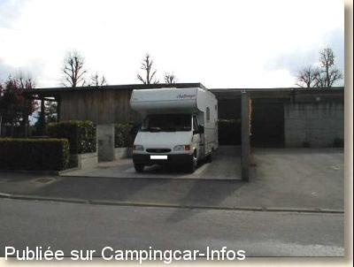
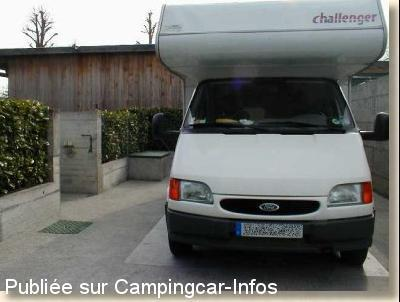

AC = Camping acceptant les camping-cars de :
SAINT GAUDENS
(N° 590)
Accès/adresse :
Rue des Chanteurs du Comminges
Camping du Belvédère
31800 SAINT GAUDENS
Camping du Belvédère
31800 SAINT GAUDENS
Latitude : (Nord) 43.10991° Décimaux ou 43° 6′ 35′′
Longitude : (Est) 0.70823° Décimaux ou 0° 42′ 29′′
Tarif : 2011
Forfait CC + 1 personne: 8€ ;
Forfait fourgon + 1 personne: 7€
Personne en + : 3,50 €
Enfant -12 ans : gratuit
Chien : 1,50 €
Électricité: 4A : 3,50€ / 8A : 4,50€ / , 13A: 6 €
Services gratuits , réservés aux utilisateurs du camping
(abattement de 25% sur l'ensemble des tarifs pour location d'une durée égale au moins de 30 jours consécutifs)
Type de borne : Artisanale
Services :


Tous commerces
Proche du centre ville
Autres informations :
Ouvert du 1er juin au 30 septembre
83 emplacements
Accueil tous les jours de 7h à 22h
Borne de services réservée aux utilisateurs du camping
http://www.tourisme-stgaudens.com/web/fr/51-camping.php ?hebergement=31
Tél: +33(0)562 001 603

Le 11/03/2003 par Guy P Troll

Le 11/03/2003 par Guy P Troll
Aucun commentaire pour le moment